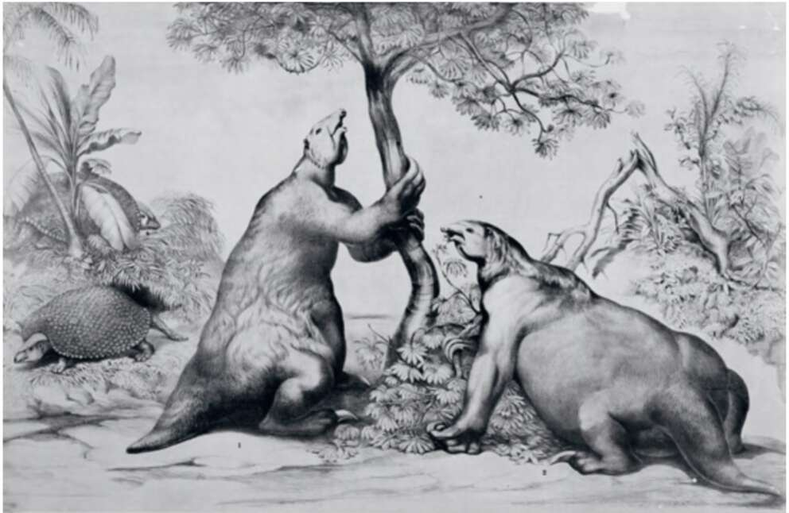

10. Reconstructions of two giant ground sloths (Megatherium) and behind them two giant armadillos (Glyptodon). Now extinct, giant armadillos measured over three metres in length and weighed up to two tons, whereas giant ground sloths reached heights of up to six metres, and weighed up to eight tons. In the Pacific Ocean, the main wave of extinction began in about 1500 sc, When Polynesian farmers settled the Solomon Islands, Fiji and New Caledonia. They killed off, directly or indirectly, hundreds of species of birds, insects, snails and other local inhabitants. From there, the wave of extinction moved gradually to the east, the south and the north, into the heart of the Pacific Ocean, obliterating on its way the unique fauna of Samoa and Tonga (1200 sc); the Marquis Islands (ap1); Easter Island, the Cook Islands and Hawaii (av 500); and finally New Zealand (ap 1200). Similar ecological disasters occurred on almost every one of the thousands of islands that pepper the Atlantic Ocean, Indian Ocean, Arctic Ocean and Mediterranean Sea. Archaeologists have discovered on even the tiniest islands evidence of the existence of birds, insects and snails that lived there for countless generations, only to vanish when the first human farmers arrived. None but a few extremely remote islands escaped man’s notice until the modern age, and these islands kept their
